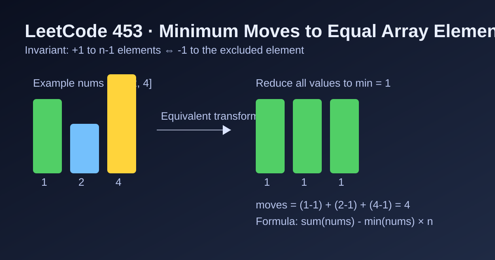

LeetCode 453: Minimum Moves to Equal Array Elements (Sum - Min*n Invariant)
LeetCode 453MathInvariantToday we solve LeetCode 453 - Minimum Moves to Equal Array Elements.
Source: https://leetcode.com/problems/minimum-moves-to-equal-array-elements/

English
Problem Summary
Given an integer array nums, one move increments n - 1 elements by 1. Return the minimum number of moves to make all elements equal.
Key Insight
Incrementing all elements except one is equivalent to decrementing that one element by 1 relative to others. So the goal becomes reducing every number down to the global minimum value.
Derivation
If minVal = min(nums), then each nums[i] needs nums[i] - minVal effective decrements.
Total moves:
sum(nums[i] - minVal) = sum(nums) - minVal * n.
Algorithm
- Scan once to compute sum and minVal.
- Return sum - minVal * n.
Complexity Analysis
Let n be the array length.
Time: O(n).
Space: O(1).
Common Pitfalls
- Simulating moves directly: too slow and unnecessary.
- Misunderstanding operation direction; use invariant transformation.
- Using 32-bit sum in languages where overflow can occur for large inputs.
Reference Implementations (Java / Go / C++ / Python / JavaScript)
class Solution {
public int minMoves(int[] nums) {
long sum = 0;
int minVal = Integer.MAX_VALUE;
for (int x : nums) {
sum += x;
minVal = Math.min(minVal, x);
}
return (int)(sum - (long)minVal * nums.length);
}
}func minMoves(nums []int) int {
sum := 0
minVal := nums[0]
for _, x := range nums {
sum += x
if x < minVal {
minVal = x
}
}
return sum - minVal*len(nums)
}class Solution {
public:
int minMoves(vector<int>& nums) {
long long sum = 0;
int minVal = INT_MAX;
for (int x : nums) {
sum += x;
minVal = min(minVal, x);
}
return (int)(sum - 1LL * minVal * nums.size());
}
};class Solution:
def minMoves(self, nums: List[int]) -> int:
return sum(nums) - min(nums) * len(nums)var minMoves = function(nums) {
let sum = 0;
let minVal = Infinity;
for (const x of nums) {
sum += x;
if (x < minVal) minVal = x;
}
return sum - minVal * nums.length;
};中文
题目概述
给定整数数组 nums，每次操作可以让其中 n - 1 个元素都加 1。求让所有元素相等的最少操作次数。
核心思路
给除了一个元素以外的所有元素 +1，等价于“这个没加的元素相对其它元素 -1”。所以问题可以转化为：把所有元素都“降到”全局最小值 minVal 需要多少步。
公式推导
每个元素 nums[i] 需要的步数是 nums[i] - minVal。
总步数为：
Σ(nums[i] - minVal) = Σ(nums) - minVal * n。
算法步骤
- 一次遍历求数组总和 sum 和最小值 minVal。
- 返回 sum - minVal * n。
复杂度分析
设数组长度为 n。
时间复杂度：O(n)。
空间复杂度：O(1)。
常见陷阱
- 直接模拟每一次操作，复杂且低效。
- 没有使用等价变换，导致思路绕远。
- 部分语言若使用 32 位整型累加，可能在大数据下溢出。
多语言参考实现（Java / Go / C++ / Python / JavaScript）
class Solution {
public int minMoves(int[] nums) {
long sum = 0;
int minVal = Integer.MAX_VALUE;
for (int x : nums) {
sum += x;
minVal = Math.min(minVal, x);
}
return (int)(sum - (long)minVal * nums.length);
}
}func minMoves(nums []int) int {
sum := 0
minVal := nums[0]
for _, x := range nums {
sum += x
if x < minVal {
minVal = x
}
}
return sum - minVal*len(nums)
}class Solution {
public:
int minMoves(vector<int>& nums) {
long long sum = 0;
int minVal = INT_MAX;
for (int x : nums) {
sum += x;
minVal = min(minVal, x);
}
return (int)(sum - 1LL * minVal * nums.size());
}
};class Solution:
def minMoves(self, nums: List[int]) -> int:
return sum(nums) - min(nums) * len(nums)var minMoves = function(nums) {
let sum = 0;
let minVal = Infinity;
for (const x of nums) {
sum += x;
if (x < minVal) minVal = x;
}
return sum - minVal * nums.length;
};
Comments